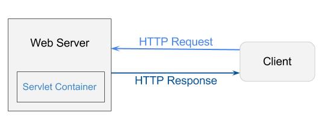

Java Web Servlets
A java servlet is a java object which plays a role in the client-server communication of a server component. Servlets run and are enabled in a Java server. In the form of an HTML page, one of the special type of servlets is HTTP servlet which provides HTTP responses and handles HTTP requests.
Java Servlet Versions
J2EE 1.2
J2EE 1.3
J2EE 1.4
JavaEE 6
JavaEE 5
JavaEE 7
Java Servlet has these versions:
▶ J2EE 1.2 (December 1999) - Java Servlet 2.2, JSP 1.1, EJB 1.1, JDBC 2.0
▶ J2EE 1.3 (September 2001) - Java Servlet 2.3, JSP 1.2, EJB 2.0, JDBC 2.1
▶ J2EE 1.4 (November 2003) - Java Servlet 2.4, JSP 2.0, EJB 2.1, JDBC 3.0
▶ Java EE 5 (May 2006) - Java Servlet 2.5, JSP 2.1, JSTL 1.2, JSF 1.2, EJB 3.0, JDBC 3.0
▶ Java EE 6 (December 2009) - Java Servlet 3.0, JSP 2.2/EL 2.2, JSTL 1.2, JSF 2.0, EJB 3.1, JDBC 4.0
▶ Java EE 7: end of 2012.
Servlet Life Cycle
• Servlet is initialized in init() method.
• To process or proceed to a client’s request, the servlet calls service() method.
• For terminating the servlets, call destroy() method.
• Collect the garbage in servlet by the garbage collector of the JVM (Java Virtual Machine).
♦ init( ) method
- called only once.
- one-time initialization.
- called only once the servlet is created.
- not called for any user requests on the succeeding time or afterwards.
- it will be used through the entire life of the servlet that loads or creates some data.
public void init() throws ServletException {
// Initialization code...
}
♦ service( ) method
- main method.
- handles requests from client browsers
- writes the arrangement or formatted response to the client.
- checks the HTTP request type such as GET,DELETE,POST,PUT, etc.
- calls doPost, doGet, doDelete, doPut, etc.
public void service(ServletRequest request, ServletResponse response)
throws ServletException, IOException {
}
♦ doGet( ) method
- supports the HTTP GET requests.
- used when a small amount of data and insensitive data.
- results from a normal request from HTML form or URL that has no method being specified.
public void doGet(HttpServletRequest request, HttpServletResponse response)
throws ServletException, IOException {
// Servlet code
}
♦ doPost( ) method
- supports the HTTP POST requests.
- used when almost large amount of a sensitive data has to be sent.
public void doPost(HttpServletRequest request, HttpServletResponse response)
throws ServletException, IOException {
// Servlet code
}
♦ destroy( ) method
- called once at the end of the servlet life cycle.
- contributes the servlet to close database connections, write cookie lists, terminate background threads and other cleanup activities.
public void doPost(HttpServletRequest request, HttpServletResponse response)
throws ServletException, IOException {
// Servlet code
}
Usage
Servlet Container
Servlet Container is also called servlet engine which handles components of a Java Servlet that can be ran in different procedures.
Services of a Servlet Container:
• It manages or handles the life cycle of servlet.
• The servlet container handles resources like JSP pages, servlets and HTML files.
• To preserve session, it appends or attaches session ID to the URL path.
• It has security service.
• File systems such as local file system or remote file system, network services can load in a servlet class.
Container Configurations of Servlet:
Servlets container have three ways on configuring the web server that manages servlets:
• Standalone container – a Java-based server which is the functionality of the Web Server is received by the Servlet container.
• In-Process container - the web server is separated because the plug-in runs in another program between the main server’s address space.
• Out-Process container – different programs of the servlet container and web server runs in a different procedure or process.
Filters
Filters can be used to convert one to another format of the content of responses, requests, and header.
• In the deployment descriptor is where the Filter class is declared.
• The usage of filter is to write reusable components
• Usage of filter under web application for some tasks:
▶ Compression
▶ Validation
▶ Internationlization
▶ Verification
♦ Interface
• Filter
The basic and initial interface that should be implement in all filter class.
Java.servlet.Filter interface methods:
• FilterChain
FilterChain is a filter that collects information or data which is about more than 1 filter. All filters
before processing of a request should be used on request.
• FilterConfig
Initialized first the filters before the object to be used. Deployment descriptor on web.xml contains
configuration information. The interface of FilterConfig’s object is used to get configuration information
that is specified under web.xml.
Sessions
A HTTP requests’ collection between server and client. It will be destroyed when the session expires and it will reverse its resources to the servlet engine.
Session Handling
It describes the data moved in a session. It also means to retain track of session data. It is also known as assession tracking. This is used when the session data comes from another session that may be required for finishing task in different or the same session by a web server.
Session Handling Mechanisms
4 session handling’s mechanism:
• URL rewriting – to make the client’s next request, the session data needs to append to the URL path on the next request.
• Hidden form field – this means that the filed of HTML form is hidden. Form fields like password, textbox etc. It is used for hiding user data.
• Cookies – It is an information from a file that is sent by a server to a client. After being sent to client, the Cookies are at the
client side when it is saved.
Javax.servlet.http.Cookie class methods:
▶ setValue(String)
▶ getValue()
▶ getName()
▶ setComment(String)
▶ getComment()
▶ setVersion(String)
▶ getVersion()
▶ setDomain(String)
▶ setPath(String)
▶ getPath()
▶ setSecure(boolean)
▶ getSecure(boolean)
• HTTP session – It is implemented throughout HttpSession object that provides asession management service.
Exception Handling
It is used to manage errors. It is used to run servlet pages and JSP that deploys description.
Error Code Configuration
It is called with 403 status code that has an error occurs on the /HandlerClass servlet.
<error-page>
<error-code>403</error-code>
<location>/HandlerClass</location>
</error-page>
Exception-Type Configuration
The /HandlerClass servlet called when the application throws IOException by the container.
<error-page>
<exception-type>java.io.IOException</exception-type>
<location>/HandlerClass</location>
</error-page>
Java Server Pages
JSP or Java Server Pages is used to build or create dynamic web pages. By using JSP tags, a java code can be added in HTML pages. The use of the tags is to retrieve or store data from the database, sharing information from one page to another etc. NetBeansIDE and EclipseIDE are the commonly used IDE’s used for JSP pages.
Life Cycle
▶ Translation
The first step, JSP document is translated by a web container into a corresponding Java code. The servlet in this is the java code. It is automatically translated by the Web server which validates, locates the correctness and automatically write the servlet on the JSP page.
▶ Compilation
It compiles the java source by the JSP container in order to generate the class file and create the equivalent servlet.
▶ Loading and Initialization
It will load the servlet by the JSP container of the two previous stages. After loading it properly, the JSP container will create an instance of the servlet class.
▶ Execution
The _jspService() method is created by the JSP engine. The _jspService() method has 2 parameters. HttpservletRequest and HttpServletResponse is created once per request.
▶ Destroying
In this last step it completes the life cycle of JSP. By using the jspDestroy() method the JSP is removed by the container.
Usage
Directives
Directive tags are utilized to give directions and guidelines used at the interpretation stage of JSP life cycle. Syntax:
<%@ directive attribute="value" %>
Types:
▶ Page directives
The page directive tag gives the guidelines utilized by the translator at the phase or stage of the life
cycle of JSP. It can be incorporated anywhere, however according to convention it is considered as a
decent programming style of including at the top. Syntax:
<%@ page attribute="value" %>
▶ Include directives
This tag is utilized amid the translation phase of JSP lifecycle to incorporate a file. It combines the
content of more than 2 files. Incorporate directives can be incorporated anyplace in the page. Syntax:
<%@ include file="path/url" %>
▶ Taglib
It is utilized to characterize a custom tag library in a JSP page. This is done as such that the related tags
can be utilized or used as a part of a similar page. Syntax:
<%@ taglib uri="URI" prefix="TagPrefix" %>
Scripting Tags
JSP scripting tags permit adding script code into the java code of a created JSP page. This page is created by the JSP translator.
3 Types of Scriptlet tags:
• Scriplet Tag - it is a tag that implements the _jspService method by composing script/java code.
It is utilized for composing java code in JSP page.
• Declarative Tag – it is utilized to declare class variables and executing class methods jspInt and jspDestroy.
• Expression Tag – it is utilized to compose a java expression. Place the semi colon (;) inside an expression tag.
Expression Language
A language that permits developers of JSP for getting to application data stored in JavaBeans components. It was presented in JSP2.0. The EL expressions are encased between “$” and “}” characters.
Operators:
▶ Arithmetic Operators
A language that permits developers of JSP for getting to application data stored in JavaBeans components. It was presented in JSP2.0. The EL expressions are encased between “$” and “}” characters.
▶ Relational Operators
Comparison Operators are used to compare two values to each other. > means Greater than, < means Less than, #60;= means Less than or equal to, >= means Greater than or equal to, == means Equal to, != means Not equal to
▶ Logical Operators
• && (AND Operator)
• || (OR Operator)
• ! (NOT Operator)
Implicit Objects
The implicit objects can straightforwardly be utilized as a part of an El expressions. Users can utilized these objects to get attributes from various parameter values and scopes.
Exception Handling
An exception is an abnormal or unexpected condition in the ordinary execution flow of a program. These exception may happen because of invalid information, getting to inaccessible files on desk and so forth.
• Errors
These are the issues which are outside the ability to control users.
• Checked Exceptions
Exceptions which can’t be ignored at the compilation and is considered as user mistake.
• Runtime Exceptions or Unchecked Exceptions
These exceptions can be overlooked at runtime.
• ErrorPage and isErrorPage
These exceptions can be overlooked at runtimeErrorPage attribute of directive’s page is utilized for setting up an error page. isErrorPage attribute is utilized for creating the exception instance variable by including the accompanying order.